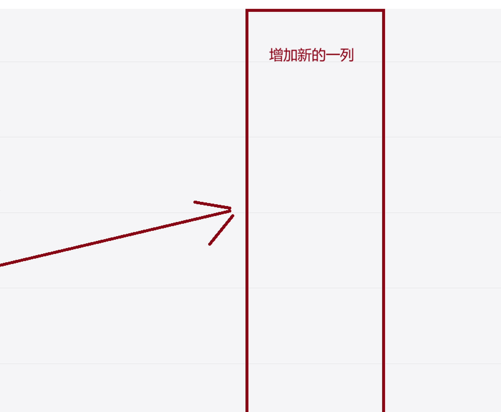
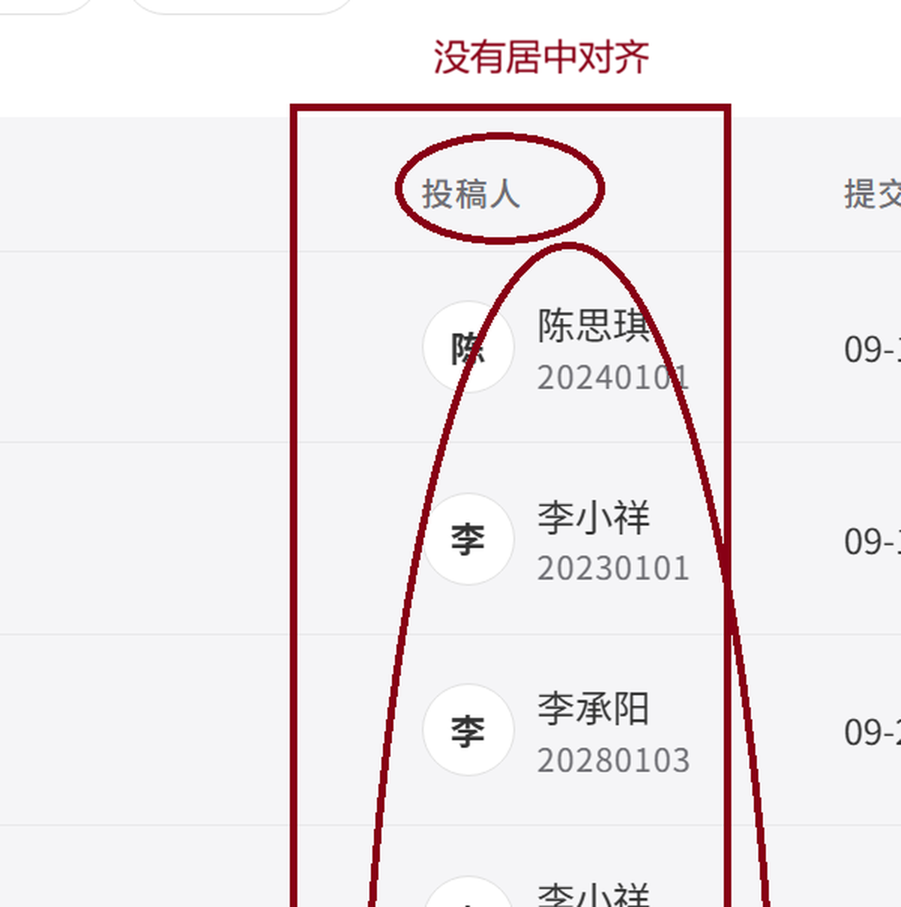
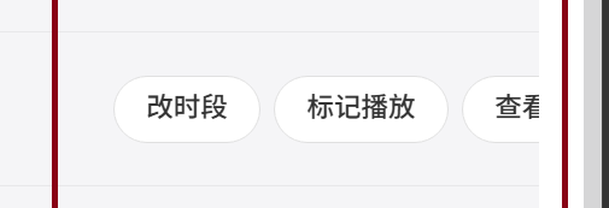

数据来源：本机最新代码，1920×1044 视口实测 —— 表格总宽 1640px。截图的旧版本另有说明。

表格一共只有 7 列，每列都有表头 —— 中间没有"空的列"。
你圈到的其实是「内容 · 排到的时段」列的右半截：它是唯一按 min-width:330 弹性伸缩的列，
在宽屏下被撑到了 800px，占整张表的一半，而文字只用掉左边一小段。

列宽 150px，但列头是左对齐（Element Plus 表头默认），单元格里的 「头像 + 姓名/学号」也是靠左贴边排的 —— 两边都不在列中心。

这是列宽 200px 的旧版本（服务器上跑的那个）。那一行是「已排期」，超管同时渲染了 改时段 66 + 标记播放 78 + 查看日志 46 + 间距 12 = 202px，减去单元格左右内边距 20px， 可用只有 180px → 最后一个按钮被裁。
本机最新代码做了两件事：列宽 200 → 236；超管不再显示「查看日志」 （指派弹窗里本来就带完整状态轨迹）。实测 7 种状态零裁切，见第 ③ 屏。
插在「内容」和「投稿人」之间 —— 就是你箭头指向的那块空白；有调剂时，在同一个格里用红色标出调剂到的时段。
第一行无调剂（排到的 = 首选）→ 列里只有时段本身，不上色。
第二行被调剂过 → 首选照常显示，下一行用灰色箭头引出红色的实际时段。
首选时段保持正常颜色，下一行用灰色箭头引出红色的实际时段
首选时段加删除线并压灰，明示"这个没用上"
实际时段占据第一行（红色），首选降为下面一行小字
三种共用的红线
你强调的「仅仅是时间段用红色标记」 —— 上色范围严格限定在时间串本身：
灰色箭头 → 不上色、「首选」两个字不上色、格子没有红底、
也不加红边框。整列只有被调剂过的那一行时段是红的：09-29 晚间 17:40。
| 行状态 | 「首选时段」列显示 | 说明 |
|---|---|---|
| 待审核 | 学生选的时段 | 还没排，就是他的首选 |
| 候补中 | 学生选的时段 | 首选那格满了，在等空位 |
| 已通过 · 待排期 | 学生选的时段 | 审核过了，还没落座 |
| 已排期 / 已播放 | 首选时段（+ 红色实际） | 两个时段不同时出现红色那一行 |
| 已驳回（系统） | 学生选的时段 | 排期锁定没排上，时段仍保留 |
| 文稿（全部状态） | — | 文稿不选时段，这一格是空的 |
列头与单元格内容一起居中；操作列把 7 种状态逐一量过。
列头偏左 45px、内容块右侧空 29px
列头与内容块中心 = 列中心 1173
getBoundingClientRect），不是看截图估的。8 列 · 新列插在内容右侧 · 投稿人/审核人居中 · 操作列 236px。数据取自本地测试库的真实 10 条。
⚠️ 预览里「内容」列被压窄了（真实宽度 650px），好让 8 列全部入镜。真实比例见第 ① 屏的量值。
<el-table-column label="首选时段" width="150">，插在「内容」与「投稿人」之间；投稿人、审核人两列的表头与单元格加居中。.sec / .sec .real .t 等规则 —— 红色只落在时间串上；投稿人列 justify-content: center。wantBroadcastTime / scheduledSlot）。